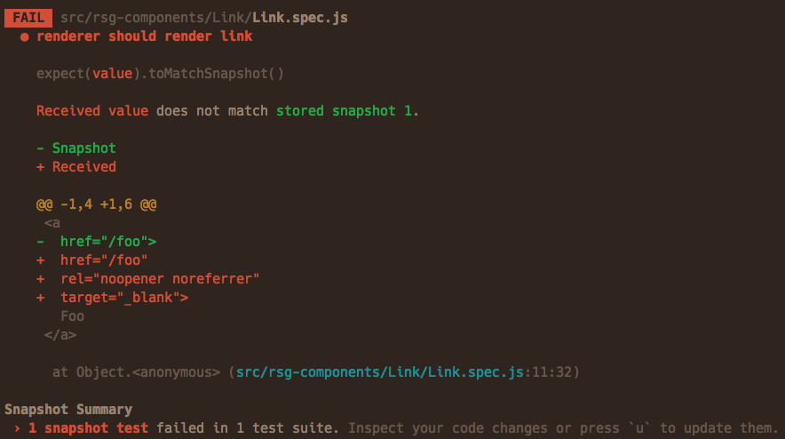

Hi! I'm Carol

I'm a frontend software engineer
at Capital One.
Check Test yourself before you wreck yourself
@CarolSaysThings
Expectation setting
I'm not an expert
Ask questions
@CarolSaysThings
Agenda
- Why I care
- Some types of testing and tools
- Designing your testing strategy
@CarolSaysThings
Why do I care?
It's a safety net

Breezy refactoring

@CarolSaysThings
Test Pyramid
@CarolSaysThings
Your best bet is to remember two things from Cohn’s original test pyramid:
- Write tests with different granularity
- The more high-level you get the fewer tests you should have
@CarolSaysThings
Test Ice Cream Cone
@CarolSaysThings
Lessons learnt on different types of testing
@CarolSaysThings
Disclaimer:
Your mileage may vary.
@CarolSaysThings
Code Formatting:
It lets you stop arguing about style while having consistent code, in a nutshell.
@CarolSaysThings
üõ† Prettier
üîó Why Prettier?@CarolSaysThings
@CarolSaysThings
Linting:
It lets you enforce coding quality principles throughout your codebase, to help you avoig bugs.
@CarolSaysThings
üõ† ESLint

Most widely adopted linter out there.
@CarolSaysThings
ESLint example
@CarolSaysThings
@CarolSaysThings
Prettier + ESLint = üíõ
Also, config is hard, so use someone else's if you can and adjust as needed üòÖ
@CarolSaysThings
Intermission
@CarolSaysThings
Unit testing
Getting the smallest unit of code, and testing it in isolation.
@CarolSaysThings
üõ† Jest

Modern tool, does a lot out of the box - assertion library, coverage, mocking, snapshots.
@CarolSaysThings

@CarolSaysThings
@CarolSaysThings
Snapshot testing
@CarolSaysThings
üî• Hot take üî•
I'm not a big fan of snapshot testing, it makes people stop paying attention.
@CarolSaysThings
T üëè D üëè D üëè
Yes, friends. Get ready for some indoctrination.
@CarolSaysThings
What's TDD?
It's a practice where you write a test first, and only enough code to satisfy that test.
@CarolSaysThings
Red · green · refactor
@CarolSaysThings
Pros:
Better architecture
You only think once
@CarolSaysThings
Cons:
It's hard to get started
@CarolSaysThings
üî• Hot take üî•
100% test coverage is not a good thing.
@CarolSaysThings
Know when to stop
üõë‚úã
You want to make sure you're not testing someone else's code.
@CarolSaysThings
Component testing
Testing your service as a whole.
@CarolSaysThings
üõ† Cypress
Low effort end to end testing framework.
@CarolSaysThings
@CarolSaysThings
@CarolSaysThings
Write one get one free
In web applications, component testing can be reused for integration testing.
@CarolSaysThings
Intermission

@CarolSaysThings
Visual testing
Tests that your application looks the way you expect it to.
@CarolSaysThings
üõ† Galen

@CarolSaysThings
üõ† Percy
- Integrates with Cypress
- Integrates with GitHub & GitLab
- Cross browser testing
@CarolSaysThings
Accessibility testing
Cypress-axe is a plugin that checks your app for common accessibility faults.
@CarolSaysThings
Mutation testing
Stryker mutator allows you to improve your tests by changing your code.
@CarolSaysThings
Designing your testing strategy
@CarolSaysThings
What do you care about?
@CarolSaysThings
Start small and increment
@CarolSaysThings
Challenges
- Buy in
- Small companies
- Big companies
@CarolSaysThings
Takeaways
- Getting started is hard
- Documentation is your friend
- Find out what you care about
- Tests your critical paths
- T üëè D üëè D üëè
- Better tools significantly reduce effort
@CarolSaysThings
Come talk to me about it
@CarolSaysThings
Thank you! üíõ‚ú®
@CarolSaysThings
Links
üîó The practical test pyramid - Ham Vocke üîó Jest docs üîó Test driven component development - Tim Doherty üîó Cypress Docs üîó Smashing - The art of layout testing with galen framework üîó David Walsh - Awesome visual testing with Percy üîó Live accessibility audit - Marcy Sutton üîó Axe üîó Stryker mutator@CarolSaysThings